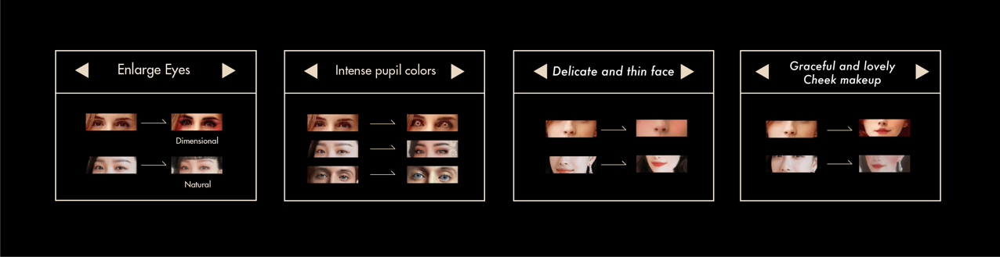
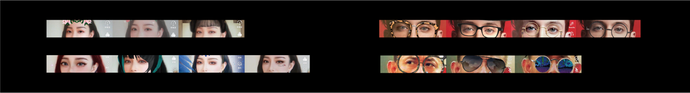
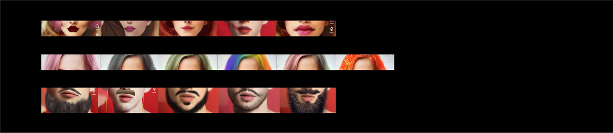

Similarities
Differences
Enlarge Eyes
Eyes & Eyebrows
Cheek & Facial Shape
Mouth & Moustache & Hair
Generally, there are big differences between the aesthetics of the East and the West. We hope to find data that can support it by studying the use of effects in TikTok of China and America. Because it has introduced different versions to better adapt to the differences between China and America. Through analysis the similarities and differences in Chinese and American effects are analyzed and summarized as our analysis of the trend of aesthetic differences.
In terms of special effects, the number of female effects is significantly more than that of males. For females, nearly half of the effects are related to eyes and cheeks. They pursue delicate eyes and three-dimensional exquisite facial shapes.
People in two countries both prefer delicate facial shape. Americans prefer three-dimensional facial shape, but Chinese prefer more natural and smooth. Among the facial effects, America has more about animation and exaggerated special effects, while China has less.

The eyes makeup effects of the TikTok would be more noticeable and dimensional. Chinese eye makeup prefers more natural and soft eye makeup and also influenced by Korean and western style. The pupil colour of American TikTok's effects, is relatively apparent and various which related to country race. Males both prefer decoration of glasses and sunglasses to make them looks cooler.
Douyin’s special effects for cheek are more beautiful and adorable with many traditional China elements. And blushers in cheeks look more obvious and red. Although both have funny and exaggerated facial change effects, while those in Douyin are relatively less and looks more conservative, just like Chinese aesthetic trend.
The number of effects that thicken lips in TikTok in America is significantly more than that in TikTok, so we can judge: Americans prefer sexy images with full lips. Females prefer dark lip color, and males like handsome beard. And we could find that many TikTok’s effects about hair involve the change of hair color.

{kind=link}
{kind=link}
{kind=link}
{kind=link}